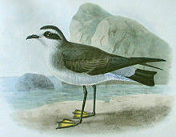
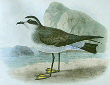

| White-faced Storm-petrel | |
|---|---|
|  | |
| Conservation status | |
| Binomial name | |
| Pelagodroma marina Latham, 1790 |
| White-faced Storm-petrel | |
|---|---|
|  | |
| Conservation status | |
| Binomial name | |
| Pelagodroma marina Latham, 1790 |
The White-faced Storm-petrel (Pelagodroma marina), also known as White-faced Petrel is a small seabird of the storm-petrel family. It is the only member of the monotypic genus Pelagodroma.
The White-faced Storm-petrel breeds on remote islands in the south Atlantic, such as Tristan da Cunha and also Australia and New Zealand. There are north Atlantic colonies on the Cape Verde Islands, Canary Islands and Savage Islands. It nests in colonies close to the sea in rock crevices and lays a single white egg. It spends the rest of the year at sea.
The White-faced Storm-petrel is 19–21 cm in length with a 41–44 cm wingspan. It has a pale brown to grey back, rump and wings with black flight feathers. It is white below, unlike other north Atlantic petrels, and has a white face with a black eye mask like a phalarope. Its plumage makes it one of the easier petrels to identify at sea.
The White-faced Storm-petrel is strictly pelagic outside the breeding season, and this, together with its often-remote breeding sites, makes this petrel a difficult bird to see from land. Only in severe storms might this species be pushed into headlands. There have been a handful of western Europe records from France, the United Kingdom and the Netherlands.
This storm-petrel is strictly nocturnal at the breeding sites to avoid predation by gulls and skuas, and will even avoid coming to land on clear moonlit nights. Like most petrels, its walking ability is limited to a short shuffle to the burrow.
It has a direct gliding flight and will patter on the water surface as it picks planktonic food items from the ocean surface. It is highly gregarious, but does not follow ships.
Widespread throughout its large range, the White-faced Storm-petrel is evaluated as Least Concern on the IUCN Red List of Threatened Species.

{kind=link}
{kind=link}
{kind=link}